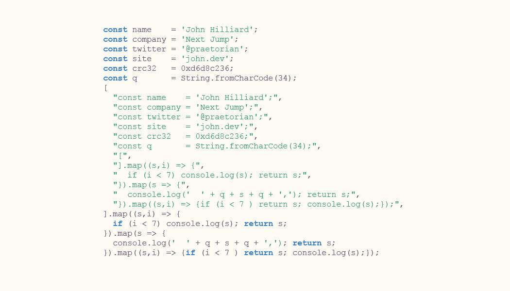

JavaScript Quine With Self Referential CRC32
./john
After writing the first quine in bash, I decided to mess around with this a little bit more. I wanted to do two things. First, I wanted to see if I could add my own contact information to the quine so that it could be used on a business card. Second, I was interested to see if I could do anything to make the code even more self-referential. So I tried to add the hash of the code into the code itself.
This is what I ended up with:
The idea of having a source code file like this that references it's own hash is very weird and cool. In most cases, a file can't contain it's own hash because if the file changes, the hash changes. Since the hash is part of the file, when you go to put the hash in the file, the resulting has of the file would also change so it would never match up.
I wrote this version in JavaScript, since I was thinking about putting it on a business card, JavaScript is a very common language and pretty easy to understand. After getting the basic quine working, I added a placeholder for a CRC32 hash and used a go program brute-force a CRC32 collision.
One interesting behavior of the brute-force program is that it didn't
use 100% of the CPU. I found that doing various types of string
concatenation caused a big slowdown. I experimented with a few
different ways of doing things like fmt.Sprintf, text.Template,
and strings.Join. They were all kind of slow. I think if I wanted to
speed things up, I would have needed to treat the string like an array
and just overwrite part of the string with different hash
values. Then, under the hood, there would be no need for concatenation
or growing the string.
In practice, finding the CRC32 collision even by ignorant brute force was pretty fast, so I didn't bother trying to optimize the code.
One thing that I did learn was that CRC32 isn't just one specific
standard. It's an algorithm and there are different standards for the
underlying polynomial that's used during the calculation. For my case,
I just needed to match the standard that's used in the default crc32
command line implementation on my system. In this case, it's the IEEE
standard.
In the end, I took the source code and dropped it into Illustrator to make it fit on a card. Now if anyone ever type this out, they could always verify they typed it correctly by verifying the CRC32.

Figure 1: The back of the business card